One Look is Enough:
A Novel Seamless Patchwise Refinement for Zero-Shot Monocular Depth Estimation Models on High-Resolution Images
ICCV 2025
Overview
We propose PRO, an efficient and generalizable tile-based depth refinement framework. Our PRO consists of two key components: (i) Grouped Patch Consistency Training that enhances test-time efficiency while mitigating the depth discontinuity problem, and (ii) Bias Free Masking that prevents the depth refinement models from overfitting to dataset-specific biases, enabling better generalization to real-world datasets even after training on synthetic data.
The gallery below presents several images from the internet and refinement results of PRO (Ours) based on DepthAnythingv2. Use the slider and gestures to reveal details on both sides.
Gallery


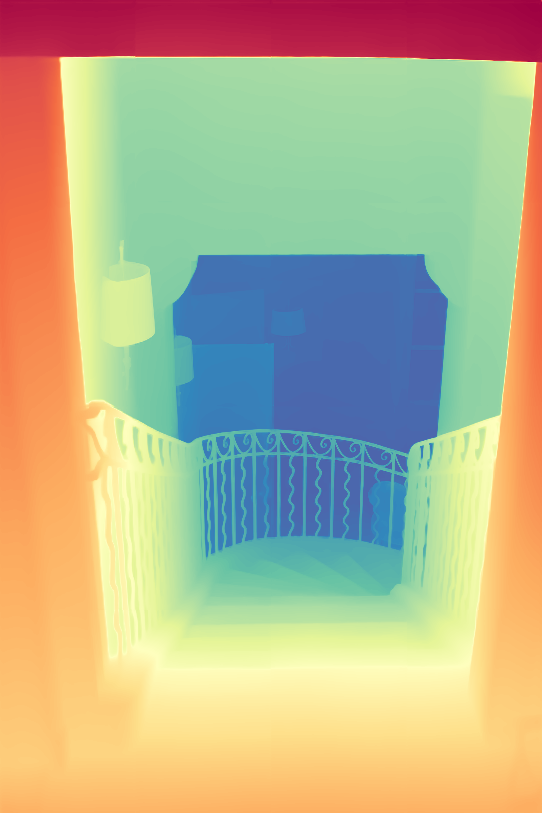
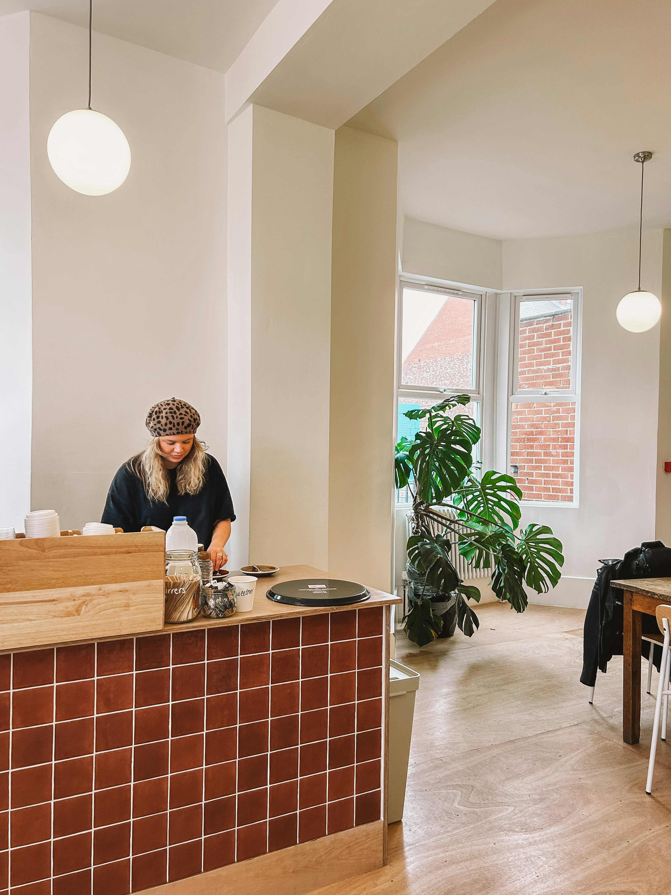
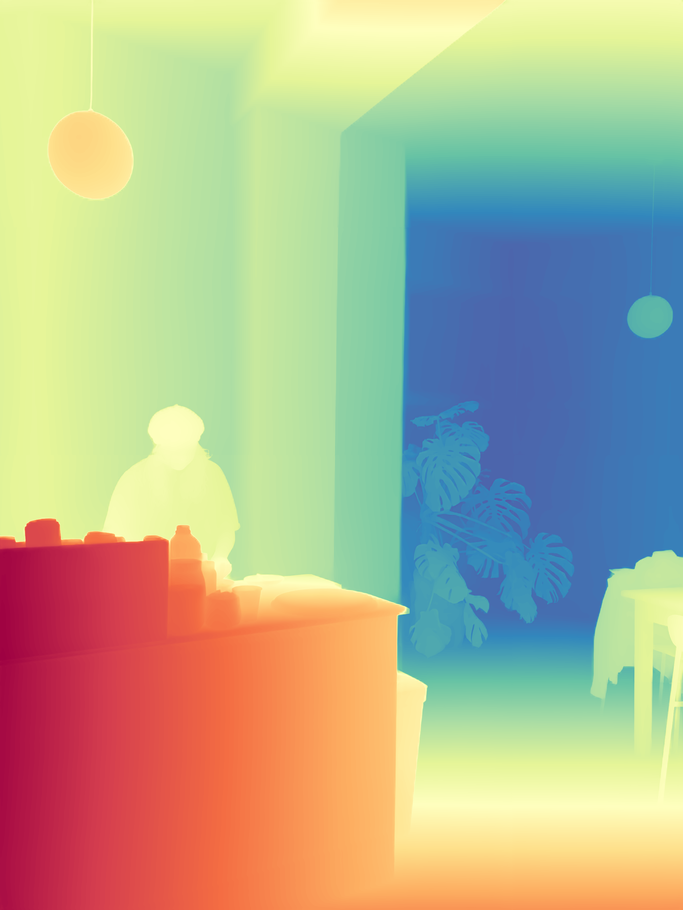
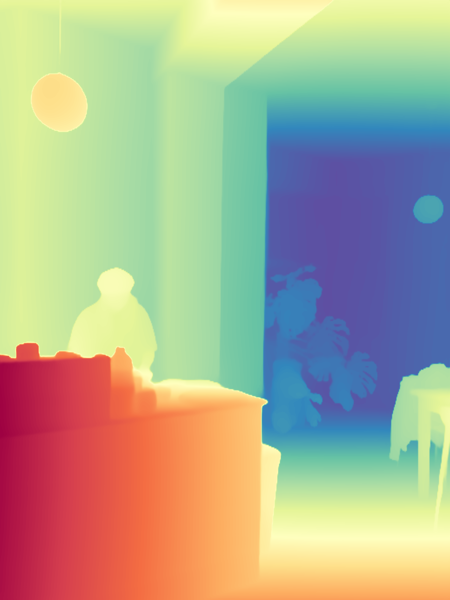

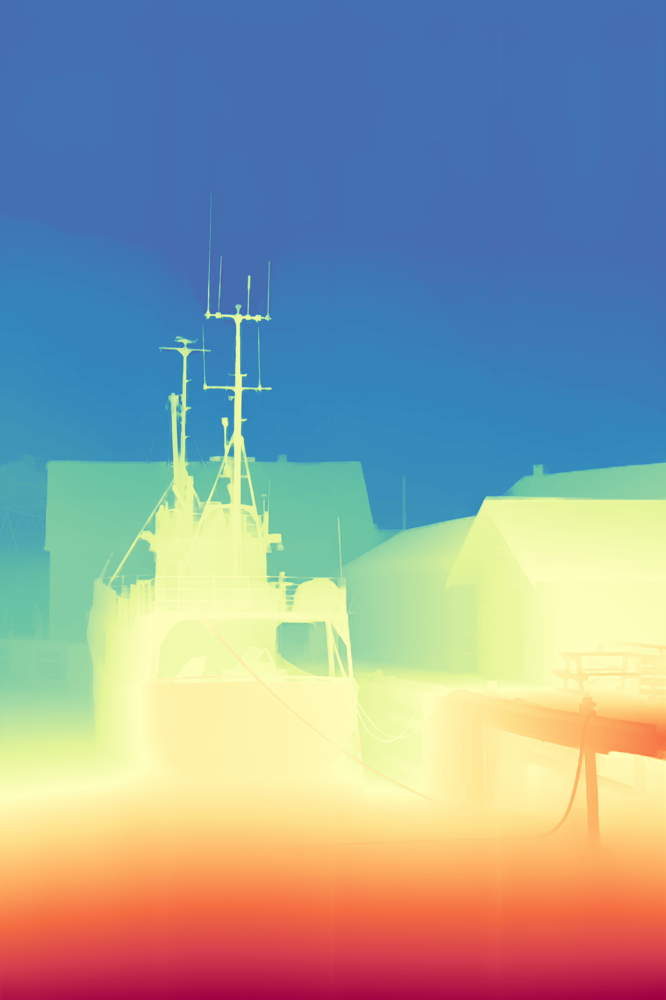
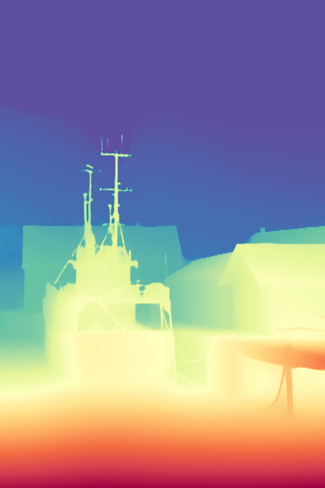

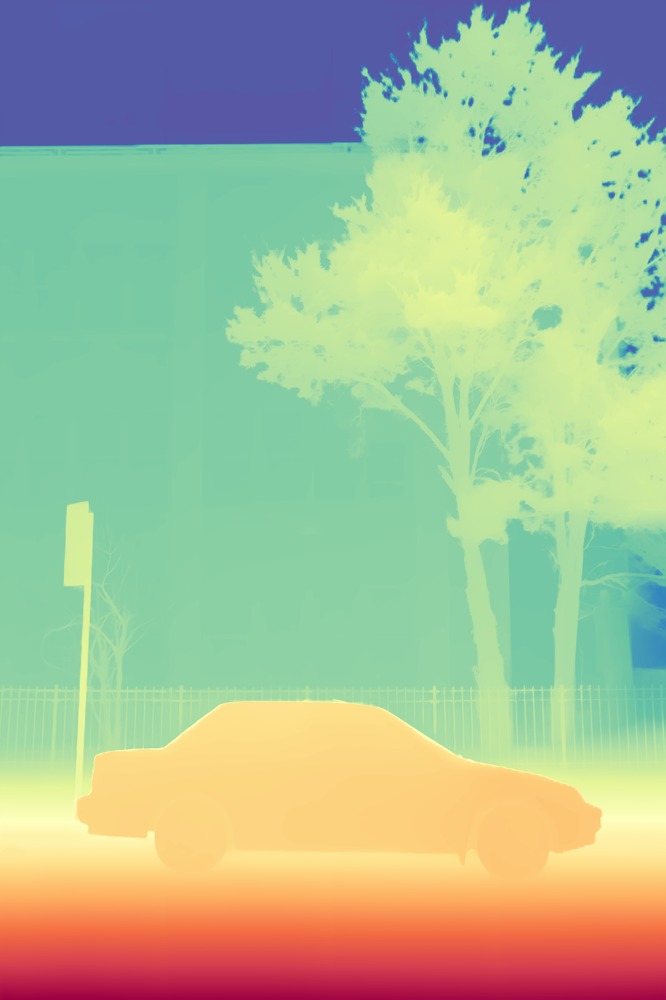


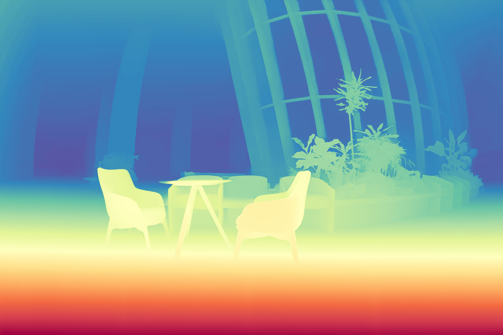
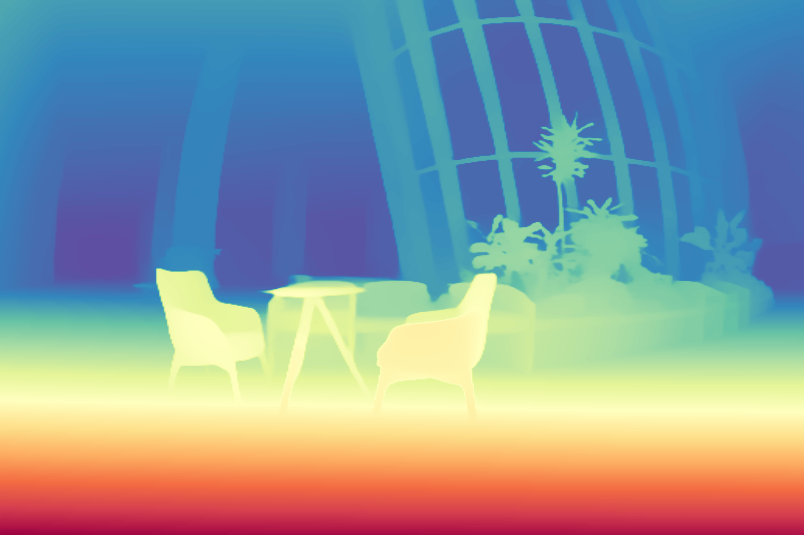


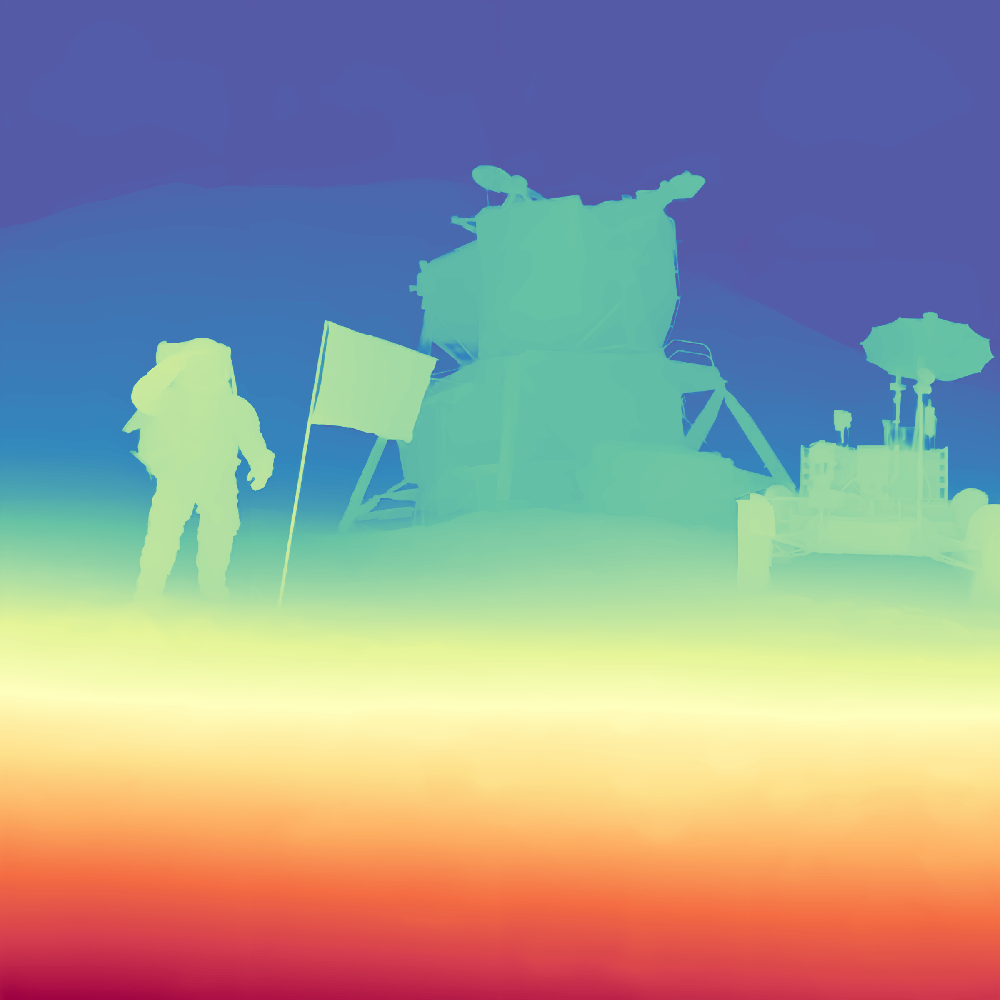
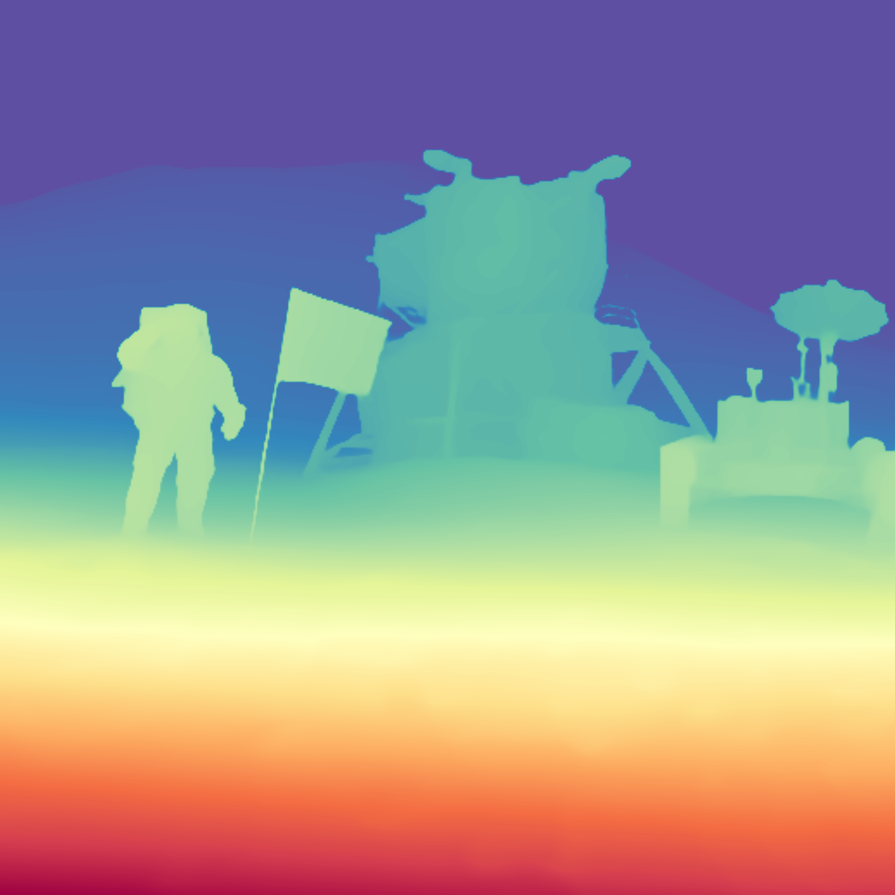


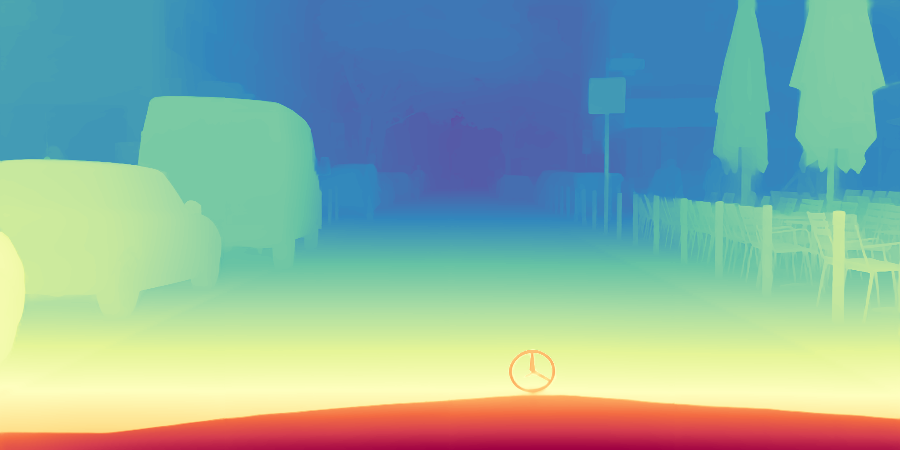
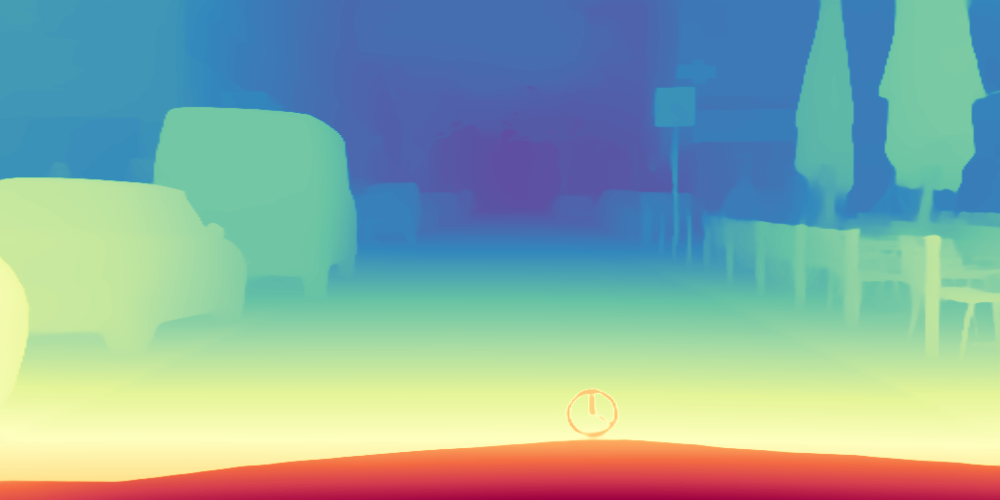

Abstract
Zero-shot depth estimation (DE) models exhibit strong generalization performance as they are trained on large-scale datasets.
However, existing models struggle with high-resolution images due to the discrepancy in image resolutions of training (with smaller resolutions) and inference (for high resolutions).
Processing them at full resolution leads to decreased estimation accuracy on depth with tremendous memory consumption, while downsampling to the training resolution results in blurred edges in the estimated depth images.
Prevailing high-resolution depth estimation methods adopt a patch-based approach, which introduces depth discontinuity issues when reassembling the estimated depth patches and results in test-time inefficiency.
Additionally, to obtain fine-grained depth details, these methods rely on synthetic datasets due to the real-world sparse ground truth depth, leading to poor generalizability.
To tackle these limitations, we propose Patch Refine Once (PRO) , an efficient and generalizable tile-based framework.
Our PRO consists of two key components:
(i) Grouped Patch Consistency Training that enhances test-time efficiency while mitigating the depth discontinuity problem by jointly processing four overlapping patches and enforcing a consistency loss on their overlapping regions within a single backpropagation step, and
(ii) Bias Free Masking that prevents the DE models from overfitting to dataset-specific biases, enabling better generalization to real-world datasets even after training on synthetic data.
Zero-shot evaluation on Booster, ETH3D, Middlebury 2014, and NuScenes demonstrates into which our PRO can be well harmonized, making their DE capabilities still effective for the grid input of high-resolution images with little depth discontinuities at the grid boundaries. Our PRO runs fast at inference time.
Method
1. Grouped Patch Consistency Training
Patch-based mthods suffer from depth discontinuity problems (e.g. boundary artifacts along grid boundaries) which occur when independent depth estimation patches are reassembled to construct a complete (whole) depth map because depth continuity is maintained within each patch but not between patches. To address the boundary artifacts introduced by patch-wise refinement, we propose a simple yet effective Grouped Patch Consistency Training (GPCT) strategy that ensures depth consistency across patch boundaries. We divide the training sample into overlapping patches (e.g. (A, B, C, and D in (b) part of the above figure), so that each patch overlaps with its neighbors. After refining each patch independently, we apply a depth consistency loss to enforce consistency between the depth refinement results of overlapping patches. Since our method computes the loss using all four patches simultaneously, every backward propagation step enforces consistency at all boundaries. By training with this GPCT strategy, our PRO model mitigates boundary artifacts without requiring additional refinement during inference, allowing efficient patch-wise depth estimation, as only a single refinement step per patch (i.e., "One Look") is required.2. Bias Free Masking
To utilize dense GT depth when training depth refinement models for fine-grained details, we use a synthetic dataset such as the UnrealStereo4K Dataset. However, the UnrealStereo4K dataset, which provides 4K resolutions, annotates the depths of transparent objects as the depths of their backgrounds (e.g., window objects in the below figure), which becomes a specific bias to the dataset. To maintain the benefits of dense depth labeling while avoiding overfitting to the dataset-specific biases, we propose Bias Free Masking (BFM) that uses the prior knowledge of the pretrained zero-shot MDE models. That is, the strategy of BFM is to exclude the unreliable regions corresponding to the incorrect GT depths for the transparent objects in the synthetic dataset (UnrealStereo4K) during training. To prevent the exclusion of critical edge regions necessary for refinement, we utilize the edge information from both $ \mathbf{D}_{\mathrm{c}} $ (coarse depth form $\Psi$) and $ \mathbf{D}_{\mathrm{gt}} $ (ground truth depth) to construct the final reliable mask, BFM. This ensures that the unreliable regions due to large discrepancies between $ \mathbf{D}_{\mathrm{c}} $ and $ \mathbf{D}_{\mathrm{gt}} $ can be ignored, while preserving essential edge details for training. Consequently, the loss is computed only over reliable regions via a masked loss function, allowing us to mitigate artifacts in transparent areas, as demonstrated in the figure below.Comparisons with other methods
We train recent SOTA depth refinement models and our PRO model on a synthetic dataset to get the advantage of dense GT depth for a fair comparison.
At test time, we evaluate its zero-shot performance on four real datasets to demonstrate generalizability.
All methods utilize DepthAnythingv2 as the base depth estimation model.

Citation
@misc{kwon2025onelook,
title={One Look is Enough: A Novel Seamless Patchwise Refinement for Zero-Shot Monocular Depth Estimation Models on High-Resolution Images},
author={Byeongjun Kwon and Munchurl Kim},
year={2025},
eprint={2503.22351},
archivePrefix={arXiv},
primaryClass={cs.CV},
url={https://arxiv.org/abs/2503.22351},
}